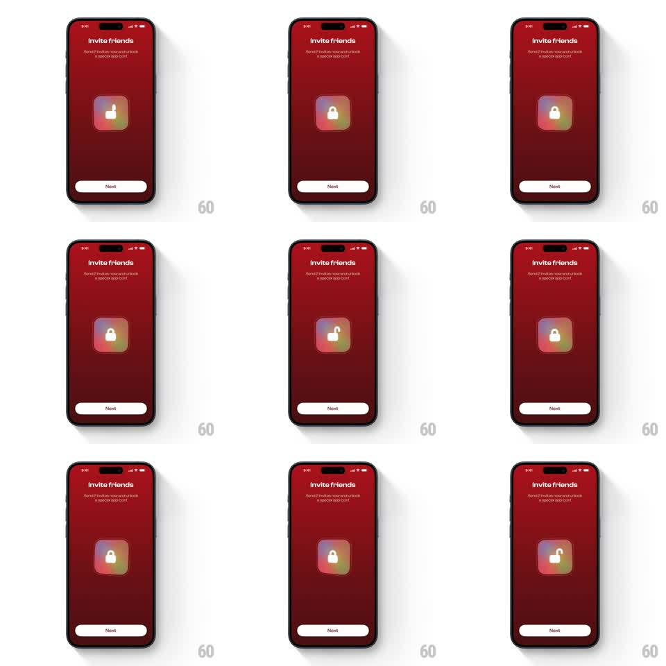

Media
Frame-by-frame

Rebuild this animation 1:1: Runbuds' invite-friends reward tease - on a deep red screen, a gradient app icon loops a padlock micro-animation: the shackle clicks open and closed, hinting at the locked app icon users can unlock.

Rebuild this animation 1:1: Runbuds' invite-friends reward tease - on a deep red screen, a gradient app icon loops a padlock micro-animation: the shackle clicks open and closed, hinting at the locked app icon users can unlock.
## Integration
Integration: stack-agnostic spec - springs given as stiffness/damping, timed motions as duration + curve; map every value to your framework and animation library of choice.
## Scene
Deep red screen: "Invite friends" title with subcopy ("Send 3 invites now and unlock a special app icon"), a large centered app-icon tile with a rainbow gradient and a white padlock glyph, and a white "Next" button at the bottom.
## Motion spec
Pattern: looping padlock unlock, ~2.4s loop.
- Unlock: the shackle rotates open (-25deg, 250ms, ease-out) with a tiny bounce on the open stop, holds 400ms, then clicks shut (200ms, ease-in) with a subtle icon jolt (scale 1 -> 1.03 -> 1, 150ms).
- Glow: while unlocked, the icon's gradient brightens ~15% and a soft halo blooms behind the tile (fades with the relock).
- Idle sway: the whole tile breathes (scale 1 -> 1.02, 1.2s alternate) between cycles.
## Calibration
- The shackle pivots at its hinge point - no sliding or fading.
- The loop is calm: one unlock cycle every ~2.4s, not a rapid rattle.
## Reduced motion
Static locked icon with the halo at low intensity.
## Don't miss
- The gradient on the tile is a full rainbow mesh, not a two-stop linear.
- The padlock is solid white and centered - it reads at a glance.